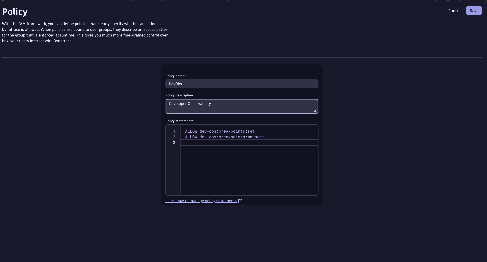
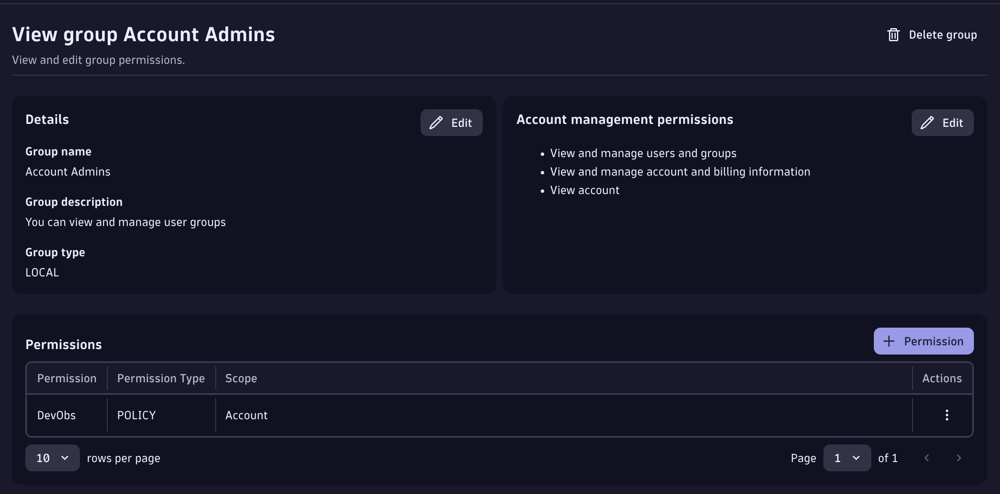
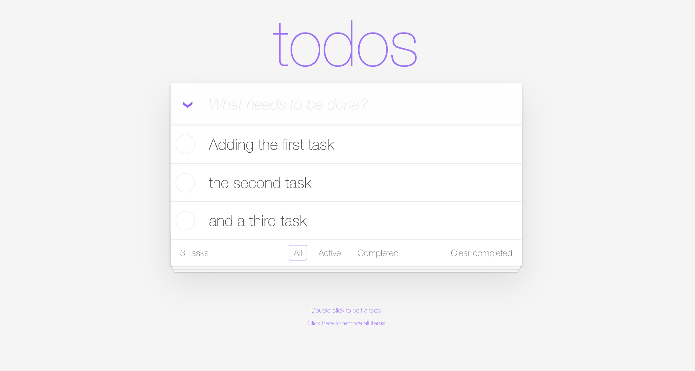

Requirements
- A Grail enabled Dynatrace SaaS Tenant (sign up here).
- A GitHub account to interact with the demo repository.
Prerequisites#
The Live Debugger reads code-level data from your application through the OneAgent and your Dynatrace tenant. Before hunting bugs, enable the capability on your tenant and confirm your environment is ready. The cluster, the Dynatrace Operator, and the buggy TODO app are provisioned for you — you only need to enable the tenant-side settings below.
1. Dynatrace tenant setup#
You need a Dynatrace SaaS tenant with a DPS pricing model and the Code Monitoring rate card associated with it. The application is monitored with Dynatrace FullStack mode (Java runtime).
1.1 Enable Observability for Developers#
- Go to Settings > Collect and Capture > Observability for Developers > Enable Observability for Developers.
- Go to Settings > Collect and Capture > General monitoring settings > OneAgent features and enable the Java Live-Debugger.
1.2 Set IAM policies#
We take security seriously, so create a policy that lets your user set breakpoints and read snapshots. Go to Account Management > Identity & Access management > + Policy.
Set breakpoints:
Read snapshots:ALLOW storage:application.snapshots:read;
ALLOW storage:buckets:read WHERE storage:table-name = "application.snapshots";
The policy should look like this:

Then bind it to a user group (e.g. the Admin group) under Group Management > Select Group > + Permission. More on the IAM model here.

1.3 Live Debugger ActiveGate module#
The Live Debugger ActiveGate module is already enabled for you in this environment's DynaKube (the debugging capability is set on the ActiveGate), so there is nothing to restart.
1.4 Enable log ingest#
The Logs hunt (Bug 3) and the DQL checks need logs flowing from the todoapp namespace. In the Settings app, go to Collect and capture > Log monitoring > Log ingest rules and either enable [Built-in] Ingest all logs, or add a rule:
| Field | Value |
|---|---|
| Rule name | TODO App Logs |
| Rule type | Include in storage |
| Condition | Kubernetes namespace name = todoapp |
Then, under Settings > General monitoring settings > OneAgent features, enable Java — Trace/span context enrichment for logs (and for unstructured logs). Click Save changes.
2. Confirm the environment is ready#
The checks below run against your live environment — both must pass before you continue. Open the Terminal tab to run the commands yourself, or just click the check buttons.
2.1 Cluster node is Ready#
2.2 TODO app is running#
The TODO application is deployed in the todoapp namespace. Open it from the Apps tab to interact with it.

2.3 Dynatrace is observing the app#
Confirm Dynatrace is already collecting logs from the TODO app. (You may need to interact with the app first and wait 2–3 minutes for data to flow.)
All checks passed?
Continue to Bug 1: Clear Completed.